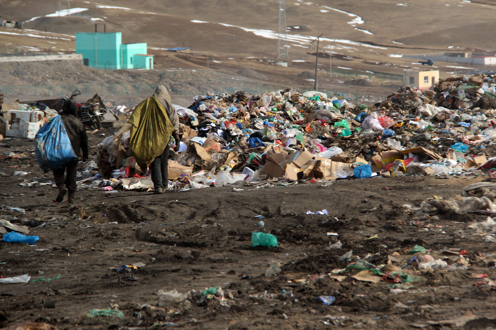

Pollution occurs when pollutants contaminate the natural surroundings; which brings about changes that affect our normal lifestyles adversely. Pollutants are the key elements or components of pollution which are generally waste materials of different forms.
The most prominent and harmful type is air pollution caused by the burning of fossil fuels. Smoke from chimneys, factories, vehicles or burning of wood basically occurs due to coal burning; this releases sulphur dioxide into the air making it toxic.Release of sulphur dioxide and hazardous gases into the air causes global warming and acid rain; which in turn have increased temperatures, erratic rains and droughts worldwide. We breathe in every polluted particle from the air; resulting in the increase incidence of asthma and cancer in the lungs.

It occurs due to several factors; the industrial wastes dumped into the rivers and other water bodies cause an imbalance in the water leading to its severe contamination and death of aquatic species. Also spraying insecticides, pesticides like DDT on plants pollutes the groundwater system and oil spills in the oceans have caused irreparable damage to the water bodies. Eutrophication is another big source; it occurs due to daily activities like washing clothes near lakes, ponds or rivers; this forces detergents to go into water which blocks sunlight from penetrating, thus reducing oxygen and making it inhabitable. Water pollution not only harms the aquatic beings but it also contaminates the entire food chain by severely affecting humans dependent on these. Increases the likelihood of waterborne diseases.

The incorporation of unwanted chemicals in the soil due to human activities. Use of insecticides and pesticides absorbs the nitrogen compounds from the soil making it unfit for plants to derive nutrition from. Release of industrial waste, mining and deforestation also exploits the soil. Since plants can’t grow properly, they can’t hold the soil and this leads to soil erosion.
Remember to turn off lights, computers, and electric appliances when not in use.

Recycle as much as you can so that it can be reused later on in other products.

Look into your local, state, and even federal initiatives in order to see if they have something that can help you change your tune.